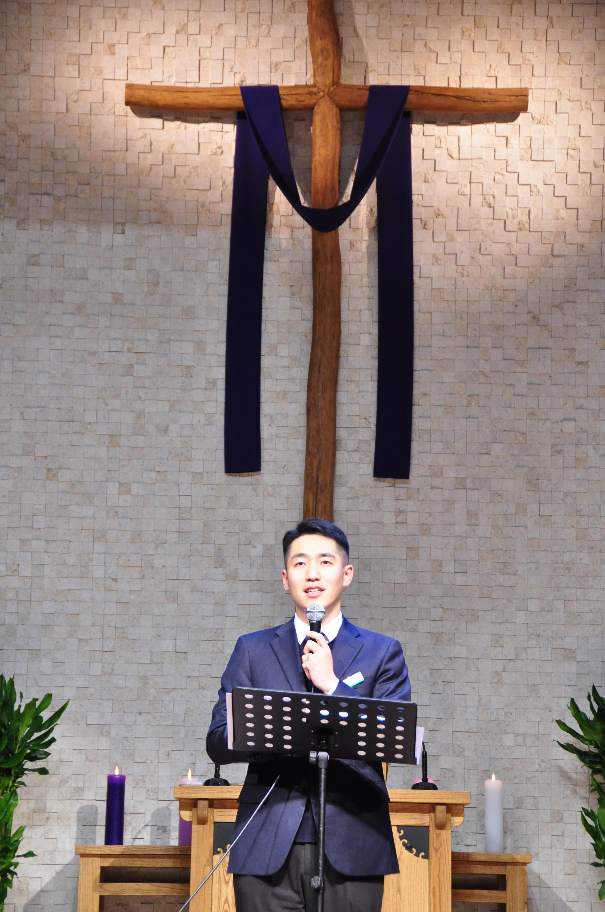

캄보디아 현장2026.07.27~31
캄보디아 답사 — 공항, 동기 목사님 만남, 캄장신 방문

Phnom Penh, Cambodia
비록 작은 불꽃 하나는 약하지만, 동역자님의 기도가 더해진다면
캄보디아를 밝히는 큰 횃불이 될 줄 믿습니다.
왜 하필 캄보디아인가요
오래 품어온 캄보디아를 향한 마음이,
이제 첫걸음이 되었습니다.
2008년, 주님께서 저를 캄보디아에 1년간 단기선교로 보내주셨고
그곳을 향한 마음을 품게 하셨습니다.
2014년, 캄보디아장로교신학교를 방문하며
선교 사역의 꿈을 갖게 되었습니다.
오랜 시간이 흐른 지금,
'작은불꽃' 홍선교(홍성화)가 그 첫걸음을 내딛고자 합니다.
Recent Updates
캄보디아 이야기, 가족 이야기, 기도편지 가운데 가장 최근의 소식부터 만나보세요.
Current Prayer
지금 이 시간, 함께 품어주셨으면 하는 기도제목입니다.
01
캄보디아를 향한 주님의 부르심을 잊지 않고, 늘 기쁨으로 순종하며 나아가도록.
02
현지의 높은 물가와 아이들 학비 등 사역과 생활에 필요한 재정이 은혜 가운데 순조롭게 채워지도록.
03
남은 파송 준비 기간 동안 온 가족이 영육 간에 강건하고, 아이들도 캄보디아를 향한 하나님의 마음을 품고 기쁘게 준비하도록.
🙏 지금까지 불러오는 중번 함께 기도했습니다
Cambodia Story
Time Line
확대/축소, 좌우로 이동해서 살펴보세요
Mission Media
최근 사진과 영상을 먼저 보여드리고, 지난 준비의 발걸음은 앨범으로 차곡차곡 모아두었습니다.
Family Story
Prayer Letter
Prayer Letter
최신 사역 요약과 기도편지를 이메일로 받아보세요.
프놈펜의 소식을 전해드립니다.
새 창에서 이메일 주소를 입력하시면 구독이 완료돼요.
기도의 장작을 더해주세요
불꽃은 혼자 타오를 수 없습니다. 여러분의 기도는 선교지의 산소가 되고,
후원은 계속 타오르게 하는 장작이 됩니다. 원하시는 방식을 선택해 주세요.
🙏 지금까지 불러오는 중번 함께 기도했습니다
정기후원 목표 달성률
월 ··· / 목표 ···
캄보디아 선교의 든든한 동역자
보내주시는 후원금은 캄보디아 사역과 현지 신학교 사역을 위해 전액 사용됩니다. 미션펀드를 통해 간편하게 CMS 자동이체를 신청하실 수 있습니다.
정기후원으로 동역하기마음을 담아 보내는 곳
한 번의 후원도 큰 힘이 됩니다. 아래 계좌로 마음을 전해주세요.
카카오뱅크 3333-05-8716882
예금주 : 홍성화
함께하는 동역자들
지금까지 -명의 동역자님이 기도와 응원의 마음을 남겨주셨어요.
소중한 메시지 감사합니다! 확인 후 승인된 글만 홈페이지에 공개됩니다. 🕯️
방명록을 불러오는 중이에요...
Recent Updates
세 가지 이야기와 기도편지를 한곳에서 최신순으로 살펴보실 수 있습니다.
Family Story
Prayer Letter
🇰🇭 동역자 초청
선교는 한 사람이 홀로 떠나는 길이 아니라, 기도하는 사람과 보내는 사람, 그리고 현장에서 섬기는 사람이 함께 걸어가는 길이라고 믿습니다.
2027년, 저희 가족은 캄보디아로 파송받아 복음과 교육, 다음 세대를 세우는 사역을 시작하려 합니다. 그 길을 함께 걸어주실 동역자가 필요합니다.
캄보디아 선교의 든든한 동역자
보내주시는 후원금은 캄보디아 사역과 현지 신학교 사역을 위해 전액 사용됩니다. 미션펀드를 통해 간편하게 CMS 자동이체를 신청하실 수 있습니다.
정기후원으로 동역하기마음을 담아 보내는 곳
한 번의 후원도 큰 힘이 됩니다. 아래 계좌로 마음을 전해주세요.
카카오뱅크 3333-05-8716882
예금주 : 홍성화
내가 보내는 후원금은
신학교 교육
현지 목회자와 다음 세대를 세우는 교육 사역
현지 사역
캄보디아 현지에서 진행되는 복음·교육 사역
선교사 가정
선교지에서 사역을 지속하기 위한 생활과 자녀 교육
현장 사역
사역지 이동과 현지 사역에 필요한 실제 비용
후원금이 실제로 어떻게 사용되었는지는 사역 보고와 기도편지를 통해 분기별로 계속 나누겠습니다.
🇰🇭 우리가 가려는 길
저희가 꿈꾸는 것은 단순히 교회 하나를 세우는 것이 아닙니다.
신학교와 교육, 상담과 독서 모임 등을 통해 현지의 사람들이 복음을 배우고 살아내며 또 다른 사람과 다음 세대를 세워갈 수 있도록 돕고자 합니다.
현지인과 함께 배우고, 함께 예배하며, 함께 세워가는 선교. 그것이 저희가 캄보디아에서 걸어가고 싶은 길입니다.
🙏 함께해주세요
기도로, 마음으로 함께해 주세요. 캄보디아에서 시작될 사역과 저희 가족의 여정을 위해 기도해 주시면 감사하겠습니다.
함께해 주시는 모든 분들께 진심으로 감사드립니다.
먼저 저희가 어떤 사역을 하고 있는지 궁금하신가요?
사역 안내 보기 →Search
검색 결과가 없습니다.
My Story
준비된 선교사입니다

안녕하세요. 캄보디아를 마음에 품고 살아가는 홍성화 선교사입니다.
제 인생의 방향을 바꾼 건 '한마디의 말'이었습니다. 2008년, 단기선교팀이 전해준 "성화야, 주님이 너 오라신다"는 말은 제게 분명한 하나님의 음성이었습니다.
그렇게 시작된 1년간의 캄보디아 사역은 제 삶의 궤도를 완전히 바꿔놓았습니다.
전기가 끊긴 어두운 밤에 본 크고 밝은 보름달은 주님의 크심과 아름다움을 찬양케 하였습니다.
사역 중에 맹장이 터지는 복막염으로 한국에 긴급 후송되어 큰 수술을 받았습니다.
'과연 그 열악한 곳으로 다시 돌아갈 수 있을까?' 깊은 고뇌에 빠져 한동안 헌신의 찬양조차 부르지 못했습니다.
하지만 주님은 말씀을 통해 분명히 알려주셨습니다. 제가 어디에 있든, 생사화복의 주관자는 오직 하나님 한 분이시라는 것을요. 그제야 저는 두려움을 내려놓고 온전한 헌신을 고백할 수 있었습니다.
2014년에 아내와 선교지를 방문했을 때 캄보디아장로교신학교를 알게 되었습니다. 박사학위를 가진 교수가 필요하다는 말을 듣고, 저는 이를 주님의 부르심이라 고백했습니다.
그때부터 교수선교사가 되기 위해 신약학 석사와 박사과정을 밟으며 묵묵히 학업에 매진했습니다. 참 감사하게도 그 기다림의 시간 동안, 아내와 사랑하는 두 아이들까지 온 가족이 한마음으로 캄보디아를 품게 되었습니다.
코로나로 선교의 문이 닫혀가던 팍팍한 현실 속에서도 주님은 길을 여셨습니다. 대구신광교회를 통해 귀한 파송의 은혜를 허락해 주셨습니다. 최근 총회 선교사 훈련을 거치며, 제 안의 얼어있던 엔진이 다시 뜨겁게 폭발하는 것을 경험했습니다.
"선교는 가르치는 것이 아니라 배우는 것이며, 내 이름은 지워지고 오직 주님의 이름만 남는 것."
돌아보면 저는 정말 '선교사 체질'인 것 같습니다. 앞으로도 주님을 깊이 사랑하고, 캄보디아 형제자매들의 진정한 이웃이 되기를 꿈꿉니다. 이 설레고 벅찬 여정에 여러분도 기도로 함께해 주시기를 소망합니다.

Our Mission
한 사람을 사랑하고, 한 사람을 세우며, 다음 세대를 준비합니다.
교육과 지성 훈련으로 다음 세대 리더 양성
일상의 나눔과 치유가 있는 '사랑방' 상담 사역
Mission Roadmap
점화 · 1년차
불꽃을 피우기 위한 준비 — 현지어 습득과 문화 이해에 힘씁니다.
확산 · 3년차
불꽃 옮겨 붙이기 — 현지 목회자 양성과 교회 사역을 이어갑니다.
승화 · 10년차
스스로 타오르는 불꽃 — 석·박사 전문 목회자를 지도하며 신학의 뿌리를 내립니다.
🤝 협력 선교
저희는 단독 사역을 고집하지 않고 현지 교단(캄보디아 장로교 독노회)과 긴밀하게 연합합니다. 의존성을 키우는 구제가 아니라 스스로 자립할 수 있도록 돕는 것이 저희의 목표입니다. 권한을 쥐는 대신 기쁘게 이양하며, 은퇴 전 현지인 리더들에게 모든 사역 시스템을 온전히 물려주고 떠나는 건강한 선교를 지향합니다.
❤️ 동역 초청
캄보디아의 다음 세대를 세우고 아픈 마음을 치유하는 일은 저희 부부만의 힘으로는 불가능합니다. 저희는 캄보디아 땅에서 가장 먼저 땀 흘리며 온 삶을 다해 헌신하겠습니다. 여러분은 기도로, 물질로 이 땅에 소망을 흘려보내는 '보내는 선교사'가 되어주시지 않겠습니까? 여러분의 동역이 캄보디아를 살리는 가장 위대한 기적이 됩니다!
동역하기Cambodia Story
캄보디아를 처음 품었던 순간부터, 그 땅에서 만난 사람들과 이야기들을 날짜순으로 나눕니다.
Mission Media
사진과 영상이 많아질수록 카테고리로 묶어 관리합니다. 메인에는 최신 항목만, 전체보기에서는 모두 볼 수 있습니다.
캄보디아 답사 — 공항, 동기 목사님 만남, 캄장신 방문

총회 선교사 훈련 수료

장신대 채플 총회선교 훈련생 대표 간증
장로회신학대학교 채플에서 총회선교 훈련생 대표로 간증한 영상입니다.

후원요청을 위한 첫 발걸음, 떨리는 마음으로 출발합니다
선교 후원 모집을 위한 첫 방문, 떨리는 마음을 담은 출정식 쇼츠 영상입니다.